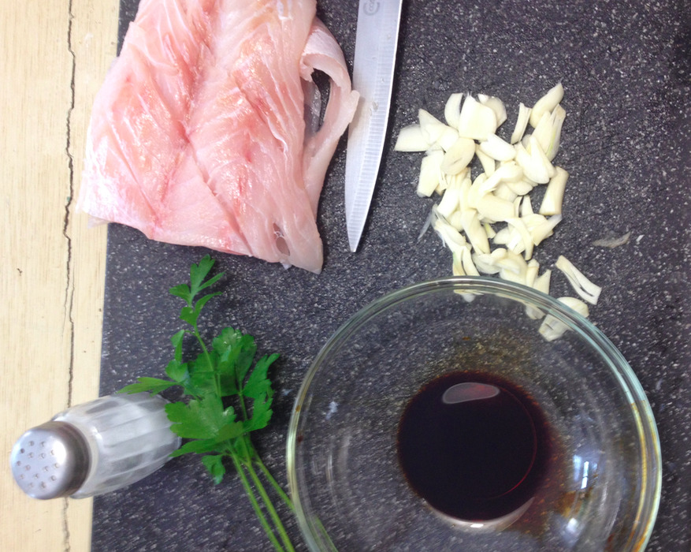
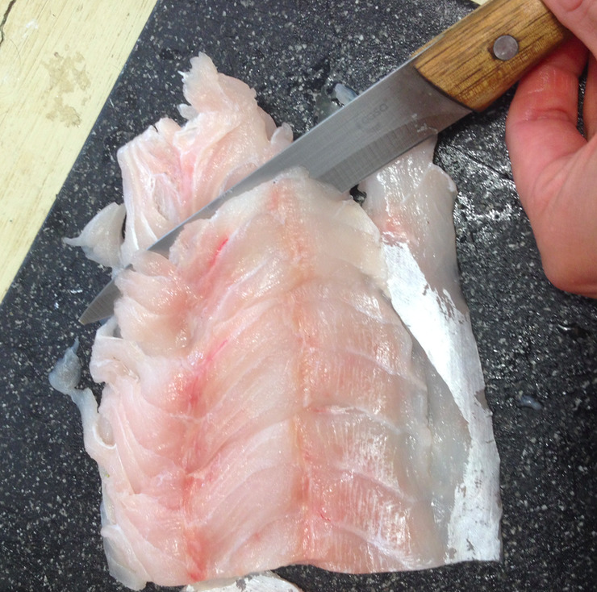
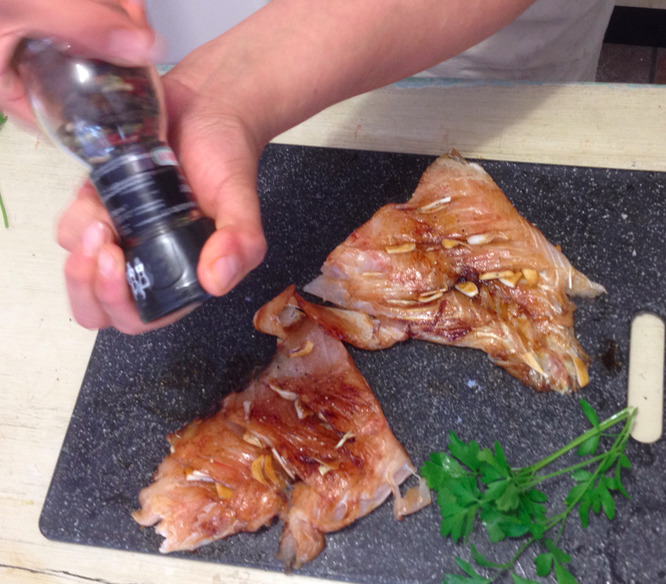
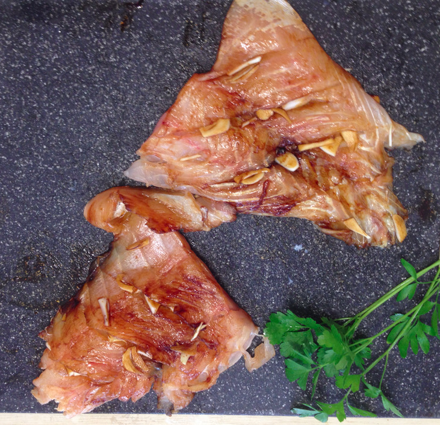
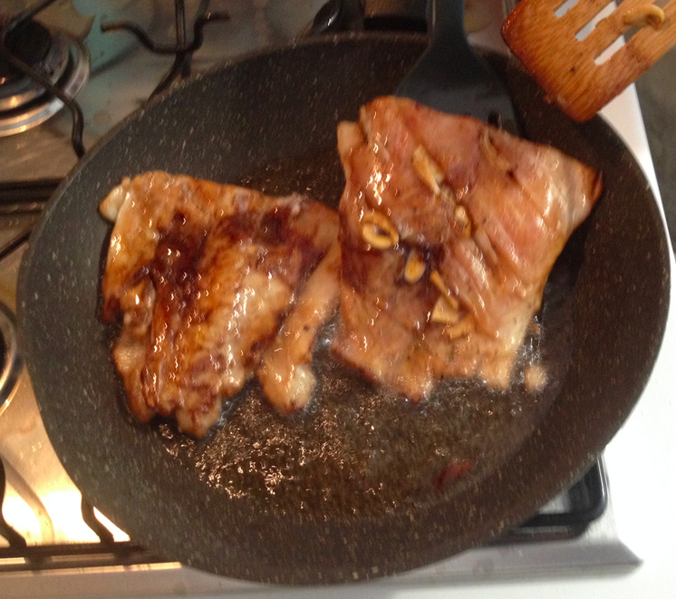

Fried perch filet with garlic¶
- Serves: 2
- Type: main dish
Background¶
This recipe is adapted from a traditional Peruvian seafood recipe. According to Peruvian tradition, it is typically eaten together with fried yucca root.
Ingredients¶
fish filet from perch (Perca fluviatilis), corvina (Cilus gilberti) or brassy grunt (Orthopristis chalceus): 400 g
garlic: 8 cloves
pepper: 1 teaspoon
salt: 0.5 teaspoon
soya sauce: 2 tablespoon
seed oil (preferable: from grape seeds) : 400 ml or more, depending on size of pan and fish
Optional:
- parsley, for decoration
Steps¶
Take one garlic clove and cut it in two parts. It is used later to scrub the fish with the internal side of the garlic.
Chop the remaining garlic in fine slices.
Use slices of garlic, and soya sauce
Clean the fish using streaming water, then dry with kitchen paper. Make sure to remove any fish bones, if present.
Cut the filet in two halves.
Scrub the fish with the cut piece of garlic.
Make shallow, oblique incisions on the sides of the filet. These will contain the garlic.
Make small incisions on the side of the fillet
Season both sides of the fish with Pepper and salt.
Pepper the fish
Fill the fish’s incisions with the pieces of garlic.
Fish with garlic slices place in incisions
Add remaining garlic to the soya sauce, and bath the fish in the sauce. Leave the fish in the sauce for five minutes.
Heat the oil in a pan, without burning it.
Add the fish in the pan and fry it. It is preferred to submerge the fish in the oil. Keep the fish in the oil for about 5 minutes. If there is insufficient oil to submerge the fish, flip the fish halfway
Fry the fish in seed oil
Place kitchen paper on a plate, then place the fish on the kitchen paper to absorb the oil. Optionally, add parsley for decoration.